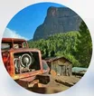

Imsfrane Cathédrale
Accueil
Activités
Rafting
Camping
Randonnée
VTT
Quad
Hébergement
Programmes
Galerie
Guide pratique
Qui sommes-nous ?
Blog
Boutique
Réservation
Contact
Besoin d’aide pour préparer votre séjour ?
+212 667 772 551

Imsfrane Cathédrale
Aventures Nature dans l’Atlas
Accueil
Activités
Rafting
Kayak
Camping
Randonnée
VTT
Quad
Hébergement
Hébergement
Maison à louer
Gîte Atlas Cathédrale
Programmes
Guide pratique
PLUS D’INFO
Galerie & souvenirs
Qui sommes-nous ?
Blog
Boutique
Guide pratique
Contact
Contact
Réserver
FR
FR
Français
EN
English
AR
العربية
ES
Español
Réserver
Aller au contenu
Accueil
›
Blog
›
Article
Chargement de l’article…
WhatsApp